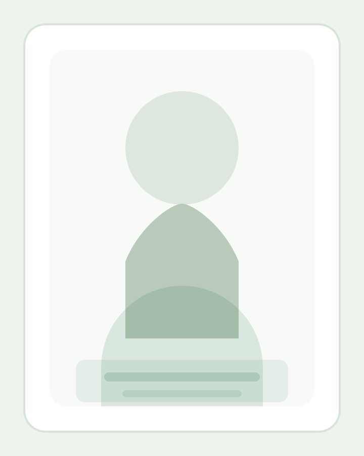
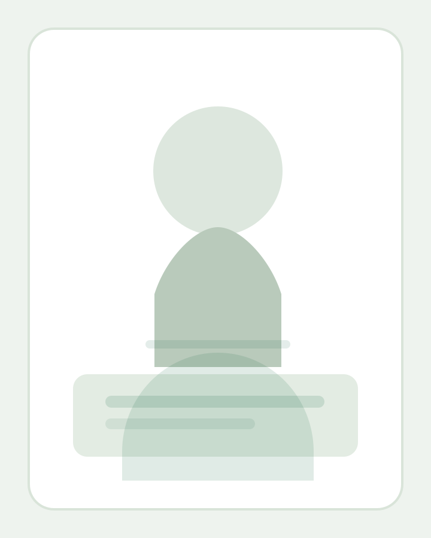

Inboxes that stay manageable
Messages are sorted, flagged, drafted, and followed through with less noise.
Virtual assistant support
Aro Johnson supports founders, consultants, agencies, and growing teams with inbox management, calendar coordination, client communication, research, and the routine operational work that keeps a business moving.
Messages are sorted, flagged, drafted, and followed through with less noise.
Scheduling, reminders, meeting prep, and time-zone coordination stay organized.
Access is kept intentional, communication stays clear, and confidential work is treated carefully.


This slot works well for a more relaxed desk portrait or a clean brand photo that adds familiarity to the page.
About Aro Johnson
The best assistant support should remove pressure, not add to it. That means cleaner communication, fewer loose ends, better visibility on what is pending, and enough structure for the work to keep moving without constant reminders.
Aro works best with people who value thoughtful communication, careful handling of private information, and consistent support behind the scenes. Whether the workload is client-facing, operational, or administrative, the goal is the same: give the business owner more time and more clarity.
Short, useful communication so you can see what has been handled, what needs approval, and what comes next.
Recurring work is documented, tracked, and cleaned up so tasks stop depending on memory alone.
Messages, scheduling, follow-ups, and support interactions stay polished and considerate.
Services
Services can be combined based on the workload, communication style, and systems already in place. The focus is on practical support that is easy to hand over and easy to maintain.
Sorting, priority flagging, response drafting, follow-up tracking, and inbox cleanup for busier workweeks.
Scheduling, rescheduling, reminders, meeting preparation, and calendar order across time zones.
Warm, professional communication that keeps clients informed and routes urgent issues cleanly.
CRM updates, document formatting, spreadsheet work, file organization, and repeatable admin workflows.
Lead research, market research, itinerary preparation, summaries, and reports that are easy to review.
Task tracking, process notes, status check-ins, and weekly operational support that keeps work moving.
Common starting points
Case Studies
These examples are framed around common support situations: inbox pressure, calendar coordination, client communication, admin accuracy, approvals, and research-heavy planning.
The goal was to reduce missed replies, make urgent conversations easier to spot, and create a steadier way to keep follow-ups moving.
Result focus: better visibility, fewer dropped threads, and less time spent rechecking the inbox.
Meeting requests, reminders, and reschedules were organized so booking became faster and calendar conflicts became easier to avoid.
Result focus: cleaner booking flow and fewer scheduling mistakes.
Support conversations were handled with clear language, tracked context, and better escalation notes when a decision had to move higher.
Result focus: more confidence in the support experience and fewer repeated explanations.
Administrative tasks were grouped into a repeatable routine so records stayed accurate, current, and easier for the team to review.
Result focus: better record accuracy and less admin catch-up work.
Content assets, approvals, and publishing windows were tracked so work kept moving even when several people were involved.
Result focus: better visibility on deadlines, assets, and approvals.
Options were compared, details were organized clearly, and decision-making became faster because the essential information was easier to scan.
Result focus: quicker decisions and a more organized final plan.
Security
Administrative support often involves calendars, inboxes, documents, client data, and internal workflows. That is why security needs to be part of the setup, the tools, and the day-to-day process.
This site and the inquiry flow have also been tightened to reduce spam, validate requests more carefully, and keep incoming messages cleaner for the owner to review.
The form now uses stricter validation, a honeypot field, submission timing checks, origin checks, and rate limiting.
Tool access should stay limited to what is genuinely needed, with shared credentials avoided wherever possible.
Clear workflows and handoff notes reduce confusion, cut avoidable mistakes, and make recurring work easier to audit.
Client communication, scheduling details, documents, and internal operations are handled with care and discretion.
Process
You share the workload, recurring bottlenecks, tools, and the tasks that are currently slowing things down.
Responsibilities, communication expectations, turnaround windows, and access boundaries are agreed clearly.
Priority work is handled first, recurring tasks are organized, and updates stay short, clear, and useful.
As the working rhythm settles, systems are improved so the same tasks take less effort week after week.
FAQ
The first conversation should feel clear and practical, especially if you already know where the pressure points are.
Inbox management, scheduling, follow-ups, support communication, reporting, and recurring admin work are usually the easiest starting points.
Yes. Scheduling, reminders, communication windows, and client coordination can be adapted for different regions and working hours.
Access should stay limited, tools should be secured properly, and sensitive information should only be handled inside agreed workflows. NDAs can also be included when needed.
Both. Some support arrangements focus on one founder or executive, while others cover shared workflows for a small team.
Once the workload, tools, communication flow, and access boundaries are clear, support can usually begin with the most urgent tasks first.
Contact
The form below has been redesigned to feel more professional for visitors and more useful for the owner. Messages are validated, checked more carefully, and delivered in a clearer format for review.
Business owners, executives, consultants, agencies, and teams who need reliable remote support.
The form encourages more useful project detail so serious inquiries are easier to review and prioritize.
A floating WhatsApp shortcut is available, and the contact card now includes direct social buttons for quick profile visits.